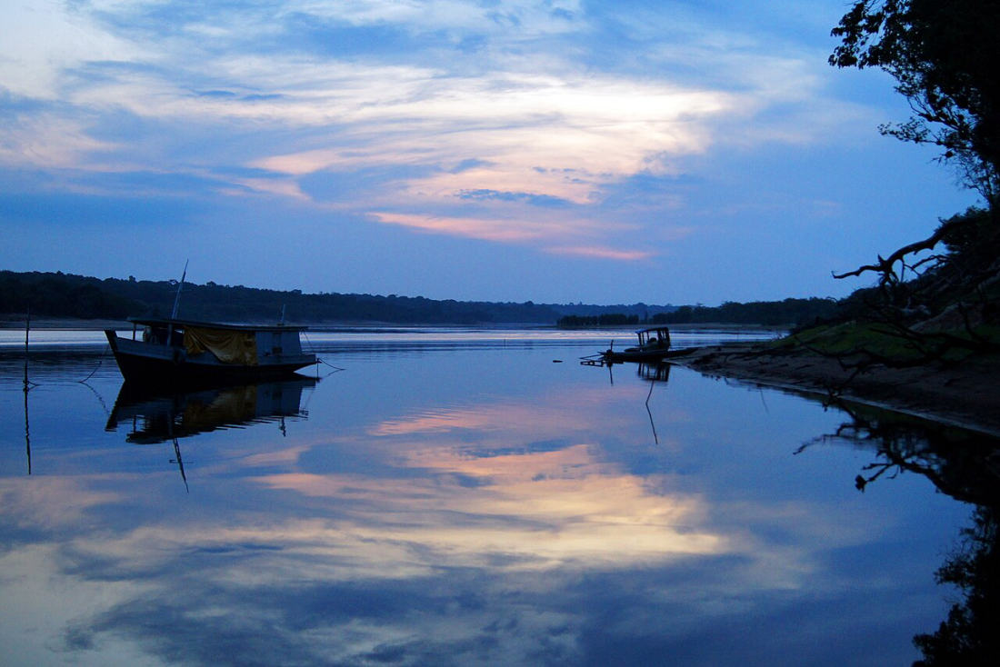

It's the question we get more than almost any other, usually right before someone books: "Am I going to be eaten alive by mosquitoes?" It's a fair worry, because the Amazon has a reputation. But here's what most people don't know before they come. It depends enormously on which river you're on, and on the Rio Negro, where we are, the difference is something guests notice on the very first evening.
Two Rivers, Two Completely Different Waters
Near Manaus, two giant rivers run side by side. The Rio Negro is dark, the colour of strong tea or black coffee, because it drains ancient sandy soils where leaves and plant matter break down slowly and release tannins and humic acids into the water. The Rio Solimões is the opposite: pale and muddy, heavy with fine sediment it carries all the way down from the Andes. One river is stained by the forest. The other is loaded with mountain silt.

Why the Rio Negro Has So Few Mosquitoes
Those tannins do something remarkable. They make the water acidic, with a pH of around 4 to 5, closer to orange juice than to a swimming pool. Mosquito larvae, including the carapanã and muriçoca everyone worries about, struggle badly in water that acidic and that poor in nutrients. There simply isn't enough for them to feed on, and the conditions work against the eggs. Fewer larvae survive, so fewer adults take to the air.
The Solimões side is the mirror image. All that Andean sediment comes packed with nutrients, and the river spills out into shallow, warm floodplain lakes full of floating vegetation. It is about as close to a perfect nursery for mosquitoes as you can get. That is also why the region is so extraordinarily rich in fish and wildlife. Fertile water is generous to everything, insects very much included.
None of this is lodge marketing. It's long-established Amazonian ecology, and river people have known it for generations. It is part of why blackwater stretches of the Amazon have historically seen far less mosquito-borne disease than the whitewater floodplains.
What It Actually Feels Like Here
In practice, it means the evening is yours. You can sit on the deck at sunset, have dinner with the group, listen to the forest at night and take a boat out after dark without spending the whole time swatting at the air. Guests bring it up constantly when they tell us how the stay went. It's usually one of the first things they mention, and often a genuine surprise compared to what they expected of the Amazon.

Being Honest: It's Fewer, Not Zero
We'd rather set the right expectation than oversell it. This is still the rainforest, so you will meet insects, especially on the jungle trail, in the flooded forest, at certain times of year and around dawn and dusk. Bring repellent and light long sleeves for the evening walks and you'll be comfortable. And if you take the Meeting of the Waters trip, you may well notice the difference for yourself once you cross to the muddy side.
Why We're Where We Are
Vista do Lago sits on the Rio Negro, in the Acajatuba community, about an hour and a half from Manaus. The black water is why the swimming here is so good, why the pink dolphins come close, why the nights are quiet, and yes, why you'll sleep a lot better than you were expecting. If a comfortable Amazon is what you're after, this side of the river is the one you want.